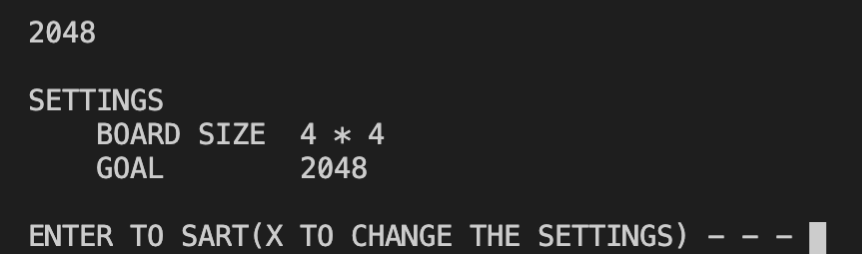
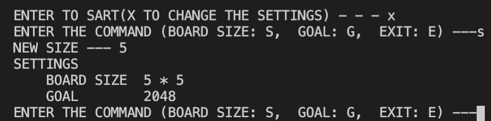
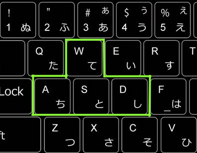

Stage 2 プログラムの機能を考える
1-3 ゲーム進行の機能を考える
ゲーム進行を考えましょう。ゲーム進行のフェーズはおおよそ
- エントランス・初期設定
- ゲームループ
- ゲームオーバー
として考えています。

ゲームループって初耳やけど何？
盤面を動かして数字を足し合わせるところって、何ターン目でもやること同じじゃないですか。やること同じなんだからループしてあげればいいんじゃないかなと。
~~~~~~~~~~~~~~~
エントランスでは初期画面、例えば「ようこそ 2048 のゲームへ!!」みたいなことを書きます。また、1-1 でせっかくマスのサイズを拡張できるようにしようという手筈にしたんですから、サイズとアガリになる数の設定くらいはできるようにしておきましょうか。
ちなみにこの画面で X を押すと、このように設定画面に移ります。
この話は Stage 6 でやりますね。
~~~~~~~~~~~~~~~
実際にゲームに入った後の動作に移ります。盤面を動かすような、何度も繰り返し実行する操作を while ループにまとめてコーディングします。
盤面を動かすには、当然ながら上下左右の方向を指定できるようにしてあげなければなりませんが、残念ながら我々はまだ上下左右キーの扱いなどの高等な技術を使うことはできません。
ほんと残念だぜ
こりゃゲーム作れないな
そこで数字を使ってコマンド風に操縦する方策と、ゲームなんかで左手用に使う W/A/S/D のキーに対応できるようにしましょう。左手の 4 つはそれぞれ上・左・下・右に対応します。
入力を受け取ったら方向に変換、盤面を動かします。もし正当な入力でなければ「もう一度やり直せ」と突き返すことになります。また、その方向に動かすことができない場合でも、もう一度やり直してもらいます。
~~~~~~~~~~~~~~~
ゲームが終了するのは
- アガリの数がでてきたとき
- これ以上盤面を動かせなくなったとき
の 2 パターンありますね。
アガリって 2048 が出てきたときやろ？
その通りです。両方ともループを脱出して結果を教えてあげましょう。